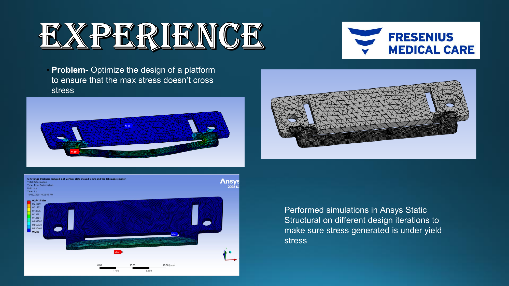
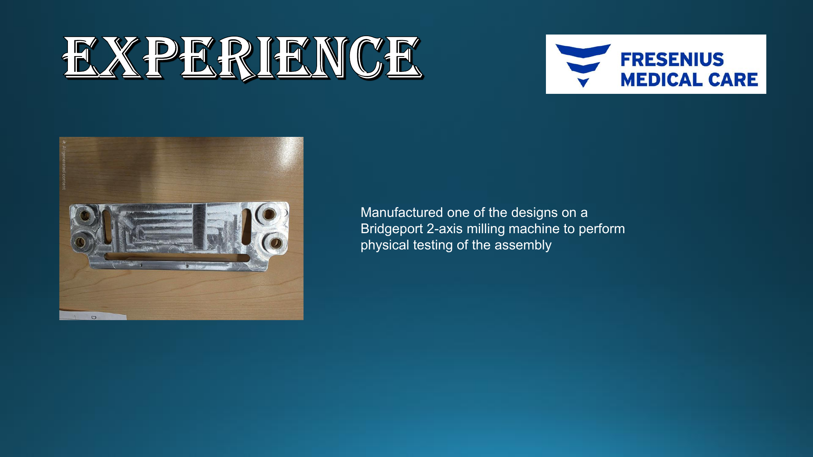

Structural analysis and physical validation
- Performed ANSYS static structural simulations across design iterations to evaluate stress distribution and structural integrity.
- Used simulation findings to guide geometry and thickness changes.
- Manufactured a selected design on a Bridgeport two-axis milling machine for physical assembly testing.

